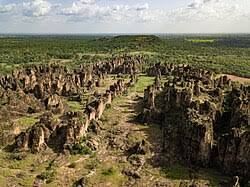
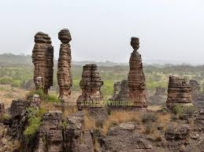
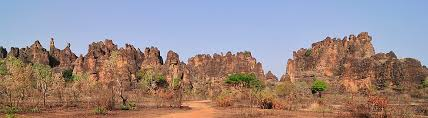

Description
Les Pics de Sindou sont une série de formations rocheuses étroites et pointues, situées près de Banfora. Ils forment un paysage unique et impressionnant.
Historique
Ces pics ont longtemps été un refuge naturel pour les populations locales et un lieu sacré. Ils témoignent aussi de millions d’années d’érosion géologique.
Galerie photos


